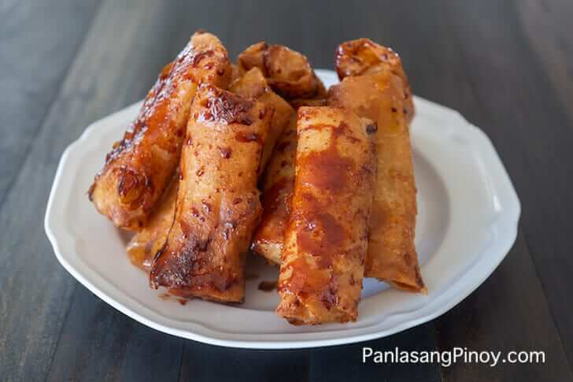

Turon

Ingredients
- 6 pieces bananas saba or plantains, cut in half (lengthwise)
- 1 cup jackfruit ripe, sliced
- 1 1/2 cup sugar
- 12 pieces lumpia wrapper
- 2 cups cooking oil
Instructions
- Fold and lock the spring roll wrapper, use water to seal the edge
- In a pan, heat the oil and put-in some sugar. Wait until the brown sugar floats
- Put-in the wrapped banana and fry until the wrapper turns golden brown and the extra sugar sticks on wrapper
- Serve hot as a dessert or snack. Share and Enjoy!